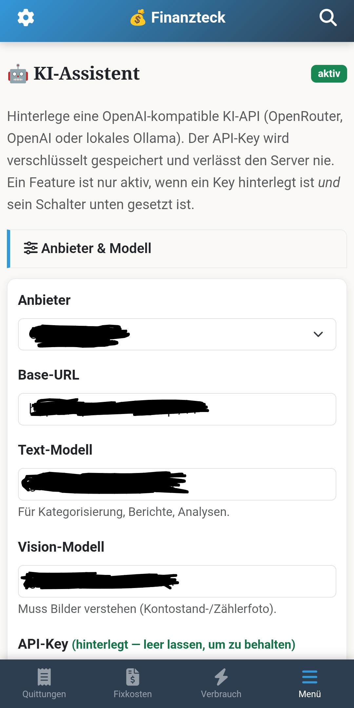
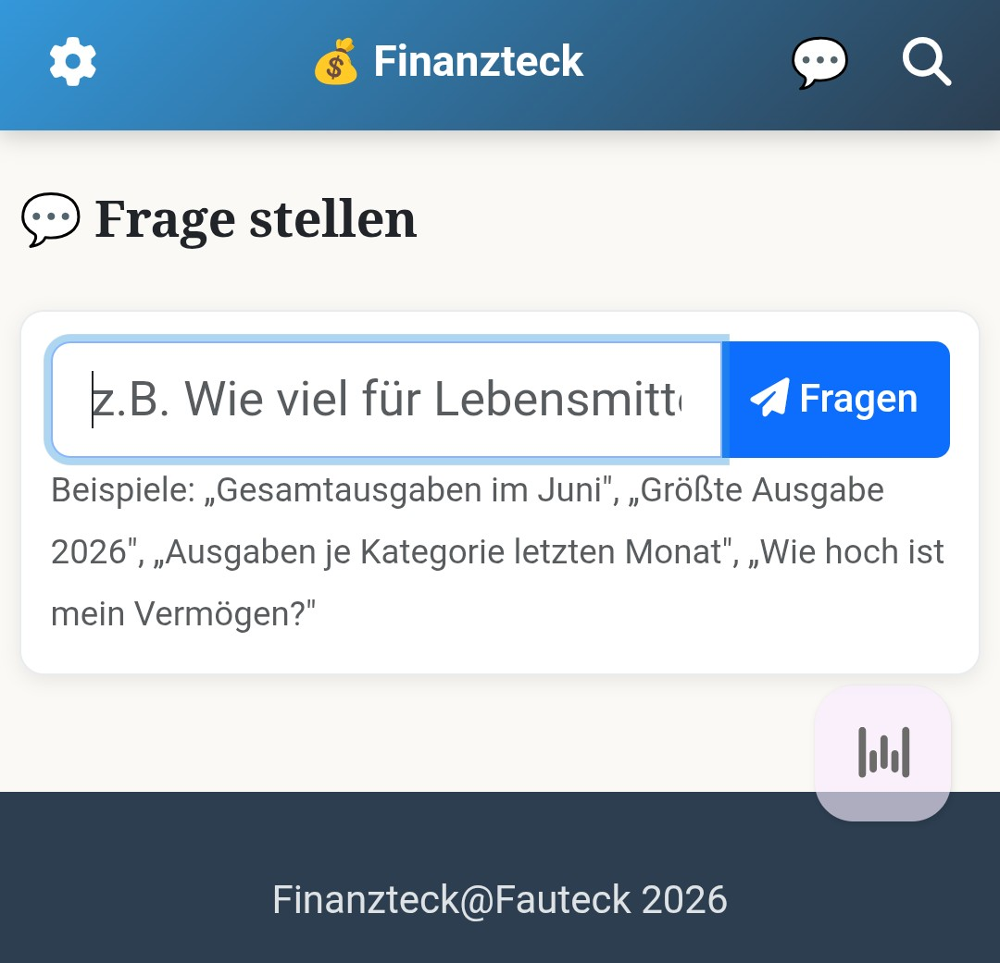

Ein Nachmittag statt drei Konzeptionsrunden
Vor zwei Jahren, noch im alten Job. Wir wollten eine KI-Funktion in ein Bestandstool integrieren. API anbinden, Rechte klären, Konzeptionsrunden. Mehrere Meetings, bis überhaupt jemand einen Prototyp gebaut hat.
Heute liegen die Möglichkeiten auf der Straße. Und ich brauche für die Integration in meine eigene, perfekt auf mich zugeschnittene App keinen Nachmittag.
Die App ist Finanzteck. Aus Splitwise und Excel geworden, selbst gehostet, meine Daten. Aber einmal im Monat saß ich trotzdem noch da und hab getippt.
Also kam KI dazu. Über eine API, egal ob lokal oder extern, je nachdem was gerade passt.

Jetzt reicht ein Foto vom Zähler. Ein Screenshot der Kontoübersicht. Die KI liest die Werte raus, trägt sie ein, fragt nach, wenn was fehlt oder unklar ist. Ich bestätige, fertig.
Kein Abtippen von Kontoständen mehr. Kein Ablesen und Eintippen der Zählerstände mehr. Nur noch prüfen und bestätigen.
Und weil das Modell sowieso lief, hab ich gleich noch mehr eingebaut. Kategorie-Vorschläge bei neuen Ausgabe-Einträgen. Beschreibungen normalisieren. Eine Verbrauchsanalyse für Strom, Gas, Wasser. Ein Budget-Coach mit Sparhinweisen. Eine Frage-Box, in die ich einfach reinschreiben kann, was ich wissen will.

"Wie hoch ist mein Vermögen?" Antwort kommt direkt aus den eigenen Daten.
Wer statt lokal lieber extern rechnen lässt, über OpenRouter oder OpenAI zum Beispiel, kriegt die Kosten trotzdem im Blick. Läufe, Tokens, Kosten, aufgeschlüsselt nach Woche, Monat, Jahr, gesamt. Bei mir zum Test: zehn Läufe, gut fünftausend Tokens, 0,0042 US-Dollar.
Und zum Monatsersten muss ich nicht mal mehr selbst dran denken. Finanzteck legt mir dann automatisch eine Aufgabe in Todoteck an, mit einem KI-Monatsbericht als Fließtext plus Aktionsliste direkt dabei. Zeit für die Runde.
Vor zwei Jahren hätte dafür ein ganzes Team viel Expertise gebraucht. Architektur, API-Anbindung, Grundlagen, die man sich erst erarbeiten musste. Heute reicht mir dafür rudimentäres Verständnis und ein bisschen Motivation, zumindest für ein Homelab-Projekt wie meins. In der kurzen Zeit haben sich so viele Ideen und Muster etabliert, dass ich sie einfach übernehmen kann statt sie selbst erfinden zu müssen.
Für einen Business Case reicht das natürlich noch nicht. Skalierung, Verfügbarkeit, Compliance, mehrere Nutzer, ein ganzer Rattenschwanz. Vibecoding allein trägt das nicht. Aber es öffnet die Tür zu genau diesen Themen.
Denn genau dort hilft KI auch. Sicherheitshärtung, Performance, Datensicherheit, Code-Effizienz lassen sich damit prüfen. Beim nächsten Mal zeige ich, mit welchen Skills ich versuche, diese Lücke zumindest in privaten Projekten so gut es geht zu schließen.